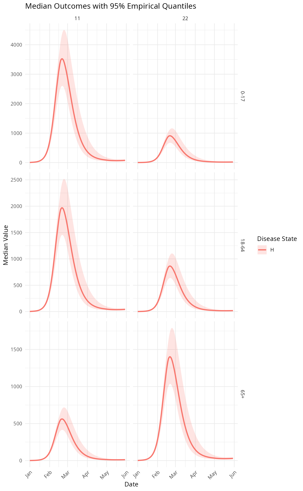
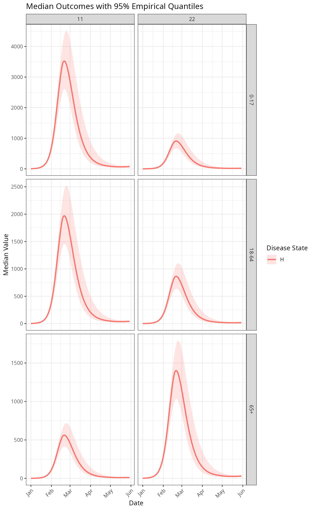

R6 class for summarized MetaRVM results with plotting capabilities and method chaining support. This class stores summarized simulation data and provides visualization methods that automatically adapt based on the data structure and grouping variables.
Details
The MetaRVMSummary class is designed to work seamlessly with method chaining from MetaRVMResults. It stores either summary statistics (mean, median, quantiles, etc.) or individual instance data, and provides intelligent plotting methods that automatically determine appropriate visualizations based on the data structure and demographic groupings.
The class supports two data types:
Summary data: Contains aggregated statistics across simulation instances
Instance data: Contains individual trajectory data for each simulation instance
Plotting behavior adapts automatically:
Single grouping variable: Facets by demographic category, colors by disease state
Two grouping variables: Grid layout with both demographics as facet dimensions
Three grouping variables: Grid layout with first two as facets, third as color
Public Fields
datadata.table containing summarized results
configMetaRVMConfig object from original simulation
typeCharacter string indicating data type ("summary" or "instances")
Public fields
dataSummarized data
configOriginal MetaRVMConfig object
typeType of summary ("instances" or "summary")
Methods
Method new()
Initialize MetaRVMSummary object
Usage
MetaRVMSummary$new(data, config, type)Method print()
Print summary of the data object
Method plot()
Plot method that shows median with quantile bands
Usage
MetaRVMSummary$plot(ci_level = 0.95, theme = theme_minimal(), title = NULL)Arguments
ci_levelConfidence level for empirical quantiles (default: 0.95). Only used if quantile columns are not pre-specified
themeggplot2 theme function (default: theme_minimal())
titleOptional custom plot title
Details
This method creates time series plots with automatic layout adaptation based on grouping variables:
For summary data: Shows median lines with quantile confidence bands
Automatically determines faceting strategy based on number of grouping variables
Uses disease states for color differentiation when appropriate
The method requires specific data structure:
Summary data must contain 'median_value' and quantile columns (e.g., 'q25', 'q75')
Instance data must contain 'instance' column for individual trajectory grouping
Examples
options(odin.verbose = FALSE)
example_config <- system.file("extdata", "example_config_dist.yaml", package = "MetaRVM")
# Run simulation
results <- metaRVM(example_config)
# Typically created through method chaining
summary_obj <- results$subset_data(disease_state = "H")$summarize(
group_by = c("age", "race"),
stats = c("median", "quantile"),
quantiles = c(0.25, 0.75)
)
# Direct plotting
summary_obj$plot()

# Plot with custom ggplot theme and confidence level
summary_obj$plot(theme = ggplot2::theme_bw())
